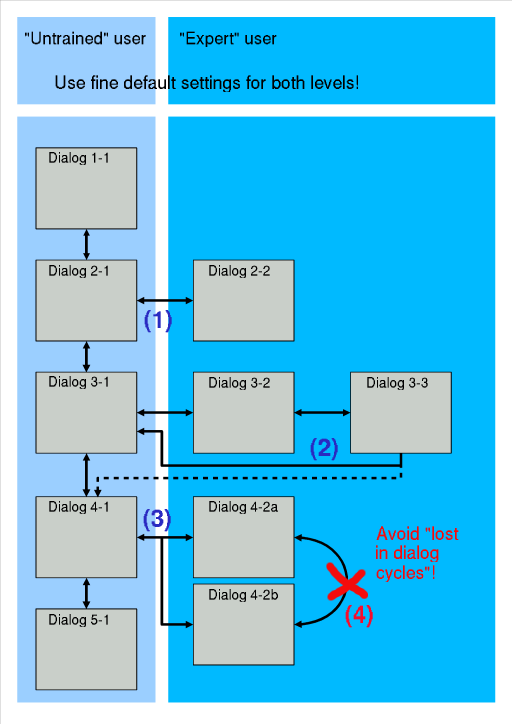
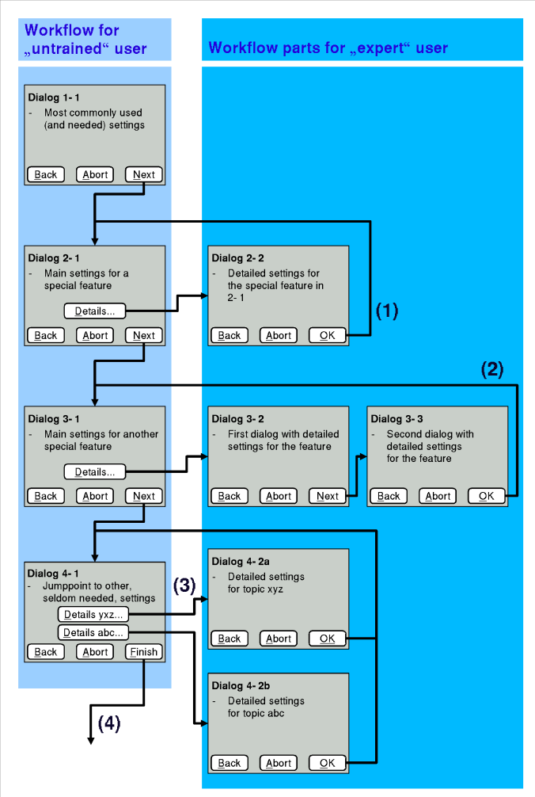
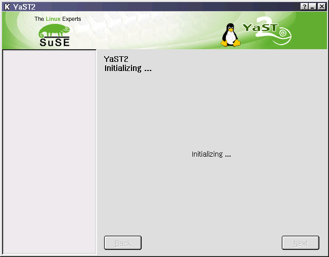
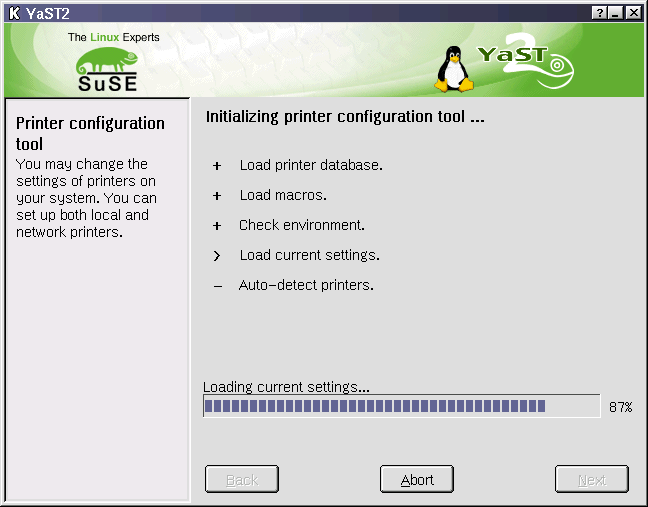
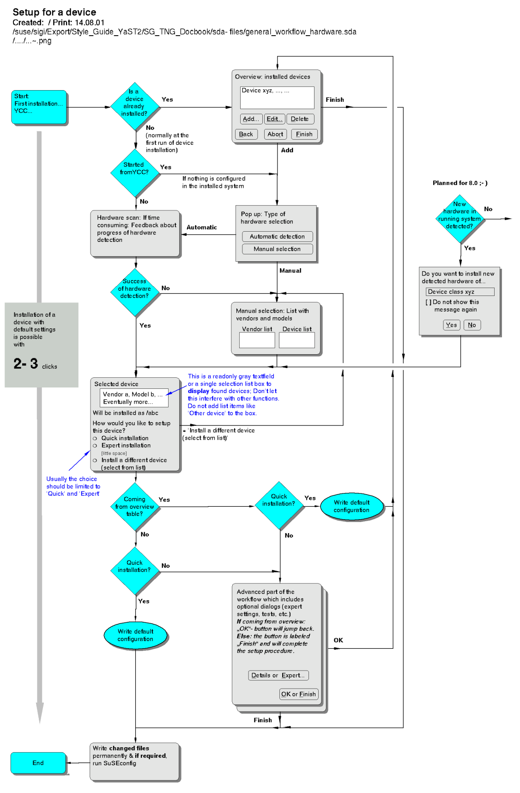

[previous page] --- [back to index] --- [next page]
[previous
page] --- [back to index] --- [next
page]
What is a
workflow anyway
Usability
How
to cope with complexity
Step by
step
Data flow
Putting
all together
Schema
Ncurses
The
modules
Multilingual concept
This part tries to give some guidance on how to describe a workflow for the YaST2 project.
A task, accomplished by a workflow, is always a service the system offers to the user. Sometimes the YaST2 module are compared with a installation wizard that will guide the user through a setup procedure. But YaST2 is not a wizard in narrower sense, it is more. YaST2 should provide
a quick and simple solution with fine default settings,
and give an expert user the chance to control all options with automatic suggested defaults or manually.
The main focus during development of YaST2 is, to cope with complex goals, e.g. How do I install/setup software raid? or How do I add a printer queue?. Simple goals like 'How do I list files in a directory?' are not in the focus in this chapter.
A workflow, in yast2 terminology, is a concise description of a task with a specific goal, an accurate end point.
In most cases the real problem is, you know where you want to get, but often you just don't know where you are. What is the starting point for achieving the goal? This is determined by the run-time environment and includes information about:
How much does the user know (expert vs. novice)? This includes the question: How to display the current system status?
How is the system configured? What hardware is available/needed?
Which packages are installed?
Etc.
The quintessence of this fact is, a workflow must adopt to changing environments and react accordingly.
This does not (!) mean it should support all possible environments, but handle unsupported cases gracefully.
For a programmer, this means to have a default-case in every switch statement.
Use the approach invented by the 'old' romans: Divide & Conquer. In the era of the Cesarian epoch the increasing compelxity of the roman civilization forced the souvereigns to divide the roman empire into several parts. So break your workflow up into small, manageable pieces and describe the pieces independently.
Another more recent description of this approach is KISS: Keep It Small and Simple. Always take a single step towards your goal:
First, try to explore the environment (Where am I?).
Cleary define which information you really need for the most common case first. For example, don't bother with usb interfaces when you want to install a serial mouse. Yes, there might be mice with an usb interface, but you can care about these later.
Always think about the most common case first and get this one right. Don't be puzzled by hundreds of special cases that might come up here and there but really are used only by a minority. So better have some cases perfect than all cases only half-baken.
Developer, HCI Designer and user are part of a team. Often the first workflow concepts will be changed. It is an iterative development process.
One solution to share information is: writing documentation for you and others. Documentation should explain
what the workflow is doing,
why it is done this way,
and how it is done.
Another solution is to create faked screenshots of dialog pages. Normally we use qt-designer to do this. ***planned: See here the short to do paper concerning the use of qt-designer.
The third solution is to make a visual overview on the planned module.
See 'normal' example here ***link
And a post design workflow example here. But it is nearly impossible to do this in time. *** link
The fourth solution is the prototype.
The interface prototype shows the look & feel of the planned program. Be aware, a prototype is not the final state of the product, it is a tool to find problems in the GUI. Use this intelligent and realistic:
Positive: feedback by users in early development stage can reduce efforts after the shipping. Note: Experts will find 70% of problems during walk through, but the 'original user' will find the rest!
Negative: very time consuming and expensive in development effort
A (simple) scheme of the workflow concept.

(1)
The 'expert' can leave the way of the 'starter' and will be back
after work done. If possible use one additional dialog page.
(2) The example shows two additional dialog pages. Sometimes it might be useful to go on to the next step (Dialog 3-3 to Dialog 4-1), but try to avoid this.
(3) The building of a cycle is a bug.
The second example shows at more detailed view of the workflow with lables for the buttons.

OK
will 'save settings' and go back to the start point.
OK on the last dialog page in this way will go back to the start point.
Dialog 4-1 has to 'Expert' buttons. Both expert dialog pages will go back to the start point with OK.
Finish will write changes permanently leave the module.

An optional feature - e.g. useful at printer setup. On slow machines the hardware detection will use 1 minute!
Bad example

Good example

Give the user a well structured simple feedback: You are here at... and you can do..., the current setup has following settings...
No permanently writing the settings to disk before a confirmation. Give the user a well structured feedback about the success of the configuration or the errors. If there are errors provide a detailed feedback about possible troubleshooting.

[previous page] --- [back to index] --- [next page]
sigi@suse.de
/ file:
{kind=link}